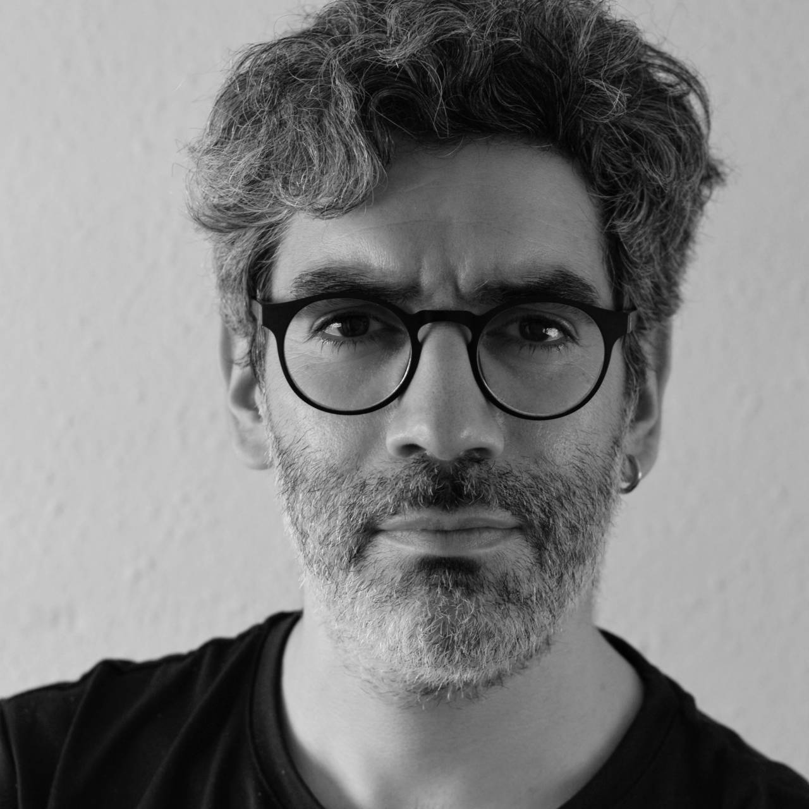

He sido desarrollador web y multimedia, dirigí proyectos digitales, adquirí experiencia en producción de eventos, y lideré el contenido y actividades de un evento masivo de videojuegos. Actualmente me dedico a desarrollar estrategias de comunicación, contenido y experiencias para marcas, eventos y empresas, con mayor enfoque en la industria gaming, esports, deportes y apuestas en línea.
Soy Leonardo Salinas. Humano de sexo masculino. Nací en Santiago de Chile. Hace 4 años vivo en Barcelona, España, tras perseguir una historia familiar que llevaba 16 años en pausa.
Prepara las palomitas, te llevo de paseo por mi historia.
Ni historias ni nada, sólo work work work. Aquí tienes mi CV, y descárgalo en PDF si te va mejor.
